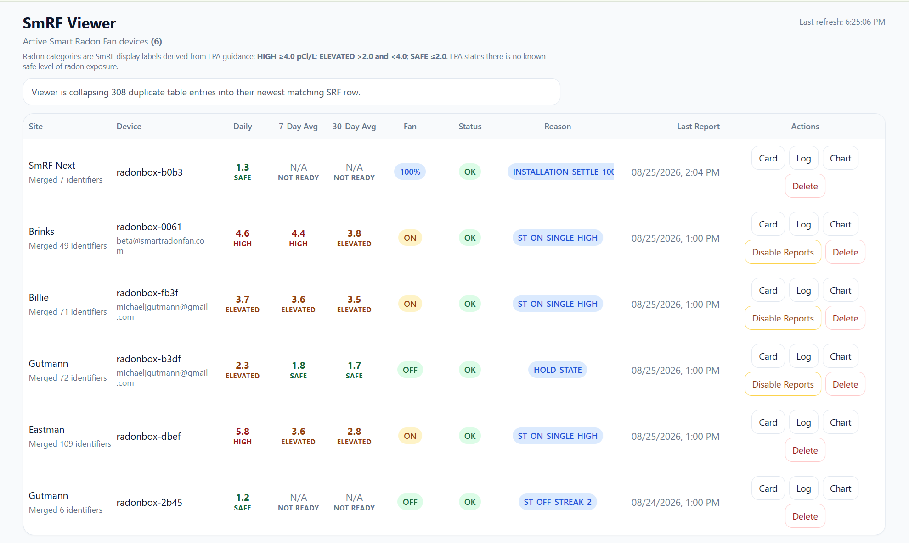

Residential Radon Solutions, LLC
Automated variable-rate radon mitigation
One installer account. Every claimed SmRF installation.
An installer creates a SmRF Viewer account and associates the SmRF installations it manages with that account. The result is one organized operational view of the installed base rather than a collection of isolated devices.
The Viewer brings together the measured radon result and the commanded mitigation: current readings, averages, variable fan rate, status, decision reason, report timing, logs, charts, and alerts.
Installer fleet management
Each SmRF can be associated with the appropriate installer account through a site-specific claim process. The installer then sees only the installations it manages and can use Viewer tools across that fleet.
Claim installations
Add individual SmRF systems to the installer account and keep the installed base organized.
Compare sites
See current radon, averages, fan output, system state, and last-report timing in one dashboard.
Surface exceptions
Status and alert information helps the installer identify sites that may need attention.
Support remotely
Cards, logs, charts, and reports help diagnose performance before scheduling a site visit.
Viewer example
The current Viewer combines conventional ON/OFF field systems with the variable-rate development system, which reports fan percentage rather than simply ON or OFF.

Why verification matters
SmRF is not satisfied with knowing that a command was sent to a fan. The control objective is the measured radon result. Viewer history provides the evidence needed to evaluate whether the mitigation is achieving that objective over time.
Control locally. Verify remotely.
The local SmRF continues operating without cloud connectivity. The Viewer receives site reports and provides fleet-level monitoring, service information, and mitigation history.